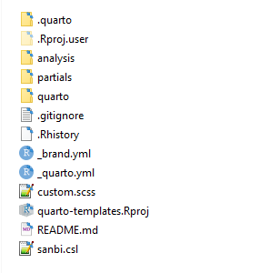

flowchart TB i1[spatial data] --> sg1 i2[database connection] --> sg1 i3[data repository connection] --> sg1 subgraph sg1 [Analytical repository] direction TB p1[indicator calculations] p2[spatial analyses] p3[map generation] end sg1 -- outputs --> sg2 subgraph sg2 [Content repository] direction TB p4[quarto] p5[images] p6[tables] p7[text] end
Maintaining workflow continuity between analytical and content repositories
NBA workflows often involve processing large spatial data sets, extracting data from databases, or other processes involving large input data files. It may seem sensible to combine your analytical work and NBA website content creation in one repository, but this creates challenges when it comes to compiling and publishing the NBA website.
GitHub limits the size of files that can be pushed to remote repositories to 100 MB and there is also restrictions on the total size of repositories (1 GB). This means that code that needs to run within a GitHub repository (for example when rendering the NBA website to GitHub Pages) cannot depend on files that exceed file size limits, and it cannot access external data repositories such as the SANBI NBA OneDrive.
A workaround is to implement workflows that rely on large input files in a separate analytical repository or folder that can run locally, and to only pass the outputs of these workflows, such as image files or small data files to web content repositories or folders. It is important however that such workflows are set up so that content is automatically passed between the generating and receiving repository/folder, so that it does not rely on you needing to remember to copy the relevant files between different repositories.
Option 1: Save outputs directly to content repository
In your analytical repository or folder, set up output file paths to the receiving content repository/folder. This means that each time the code in the analytical repository is run, the results are immediately passed to the content repository/folder.
analysis.R
output_path <- "path to data or imgs folder in content repository"
# Analyses steps
# Save to output folder
# Table
write.csv(output, file.path(output_path, "filename.csv"))
# Map or plot
ggsave(file.path(output_path, "filename.png"), plot = myplot)It is possible to set up this workflow in one repository, as long as your analytical scripts are in a different folder than your quarto content - see example screenshot below. That way you only need to do one commit when you are making changes, whereas if you have two separate repositories, you will need to remember to commit and push both.

TipTip: Use relative paths
Always use relative paths when passing contents between folders. That way, your code will always work, regardless of where on your or somebody else’s computer the repo is set up. For the folder structure above, if you are creating your table, figure, or map in an R script in the folder analysis, your path to save to quarto/data or quarto/imgs would be as follows:
output_path <- "../quarto/data/"
or
output_path <- "../quarto/imgs/"
The double dot (..) means go up one level relative to your current folder (analysis) - in other words to the folder containing both the quarto and analysis folders, and then look for a path to quarto/data/ or quarto/imgs/.
Option 2: Use a script to collect outputs from your analytical repository to your content repository
I recommend this option if your analytical repositories are separate repositories from your content repository. The workflow recommended here assumes your analytical repository has a folder named outputs where the outputs of your analytical workflows are stored. (Adjust to your setup if necessary.)
In your analytical repository, create an R script for collecting the outputs of your analysis:
collect-outputs.R
# Set up paths to source and destination directories
source_dir <- "./outputs"
dest_data_dir <- "path to quarto/data"
dest_img_dir <- "path to quarto/imgs"
# Find relevant files
data_files <- list.files(source_dir, pattern = "\\.csv$", full.names = TRUE)
img_files <- list.files(source_dir, pattern = "\\.png$", full.names = TRUE)
# Copy files to the destination folder
file.copy(data_files, dest_data_dir, overwrite = TRUE)
file.copy(img_files, dest_img_dir, overwrite = TRUE)To ensure that you always have the latest version of images/input files in your quarto folder, add this line at the end of your scripts that produce outputs:
source("collect-outputs.R")
This will then run the above script and make sure the outputs are immediately copied to your content folder. As recommended in Option 1 above, try to use relative paths.
Another option is to place this script in your content repository (just adjust the source and destination paths). You can trigger this script to automatically run whenever you start your quarto project by creating an .Rprofile file in the same root folder as your .Rproj file, and adding the line source("collect-outputs.R") to it:
.Rprofile
source("collect-outputs.R")